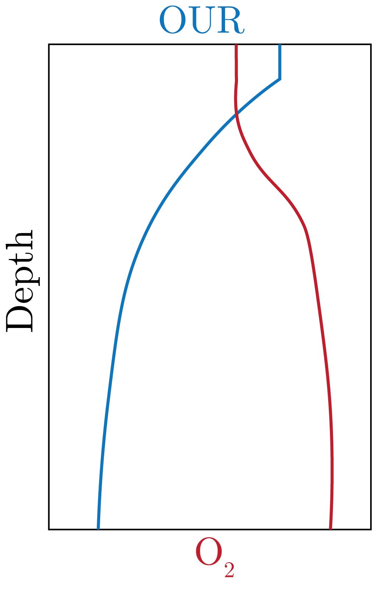
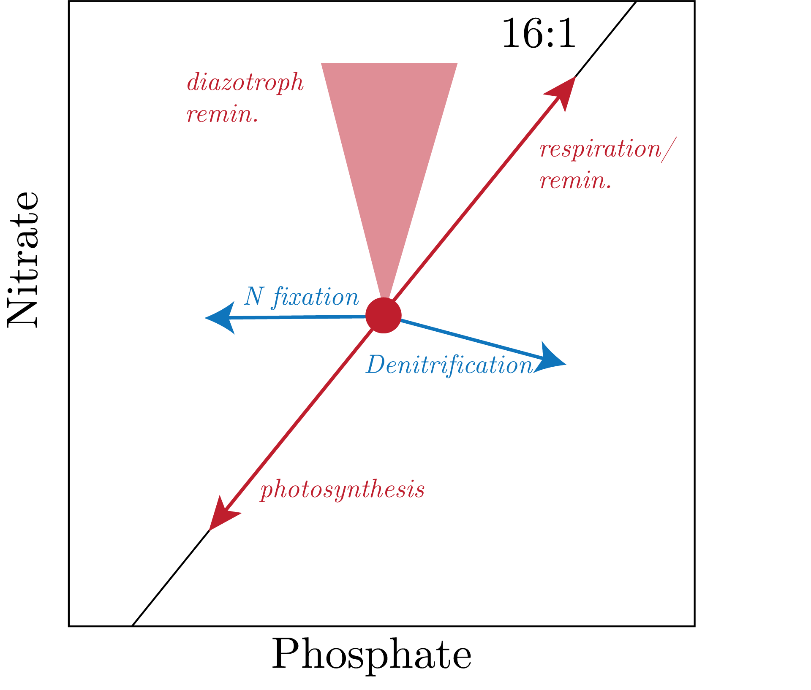

We start with hydrostatic balance:
\begin{equation}
\partial_zp = -\rho g.
\end{equation}
Then, we can integrate over some depth $\left[-h, 0\right]$ to get:
\begin{equation}
p = -\rho g h.
\end{equation}
We can then get plugging in some numbers that 1 [m] = 1 [dbar].
As we go down into the ocean, we can see that there is a large change in the processes that drive distributions of passive tracers in the ocean.
This then means that [dbar] is a good way to viewing the ocean, at least one that shows the surfaces (i.e., isobars) that really dicate the distributions in the ocean over Cartesian coordinates.
Oxygen Utilization
We recall our 3-box model and have an equation for solution in the deep box of:
\begin{equation}
C_d^{\text{O}_2} = C_s^{\text{O}_2} - r_{\text{O}_2:P}\left( C_d^{\text{PO}_4^{3-}} - C_s^{\text{PO}_4^{3-}} \right).
\end{equation}
This then means that we can view this as some partition between the initial concentration plus a change in that concentration through ventilation.
Therefore, we define:
\begin{equation}
C_{\text{observed}} = C_\text{preformed} + \Delta C_\text{remin},
\end{equation}
where we have defined $\Delta C_\text{remin} \simeq C_d^{\text{PO}_4^{3-}} - C_s^{\text{PO}_4^{3-}}$ and $C_\text{preformed} \simeq C_s^{\text{O}_2}$.
This allows us to see the effect of remineralization globally.
We can rearrange, and use oxygen gas as our tracer, to get:
\begin{equation}
\Delta \text{O}_2^{\text{remin}} = \text{O}_2^{\text{obs}} - \text{O}_2^{\text{pre}}.
\end{equation}
The nice thing about gases is that the preformed gases exchange with atmosphere at a rate that is fast enough that we consider it at equilibrium with the surface ocean:
\begin{equation}
\text{O}_2^{\text{pre}} \simeq \text{O}_2^{\text{surf}} \simeq \text{O}_2^{\text{EQ or sat}}.
\end{equation}
We then define this remineralization of oxygen as the consumed oxygen in biological processes, which we define as:
\begin{equation}
\text{Apparent O}_2\text{ Utilization (AOU)} = -\Delta \text{O}_2^{\text{remin}} = \text{O}_2^{\text{sat}} - \text{O}_2^{\text{obs}} = f(\Theta, S) - \text{measurement},
\end{equation}
where we note that the negative sign is due to the fact that the Redfield Ratio is negative for oxygen, as it is produced from photosynthesis while C, N, and P are consumed.
This does make an assumption that we know what the solubility function at the surface is, i.e., what the surface ocean conditions were at the ventilation region.
Additionally, there is a biology that complicates how much oxygen is consumed or produced.
Also, the winds that cause bubble injection at different rates, etc.
(As an aside: we note that this connection is the primary reason that we use O$_2$:Ar ratios, in addition that the solubility curves are nearly identical).
We next defined the O$_2$ Utilization rate (OUR), defined as:
\begin{equation}
\text{OUR} = \frac{\textrm{d}\text{AOU}}{\textrm{d}t}.
\end{equation}
Note that this is not commonly used as the rate with respect to time is hard to estimate accurately.
To loop physical processes back in from previous lectures, we recall that it is really the winter MLD that drives the depth and depth at which the deep ocean is ventilated.
The way that we can trace these processes is using CFCs (as we have a good atmospheric record with a slow decay rate) and tritium (from bombs, and we use the ratio with He).
Canonical profiles of this look like the ones presented in Fig. 1.

Fig. 1: Profiles of OUR and Oxygen.
Important here to note is the decrease in OUR with depth, which is due to the fact that there is less biology going on as you go deeper.
The second thing to get from this is that in the oxygen profiles we have that increase with depth because there it is ventilated from the Southern Ocean, which is the primary region of ventilation for the deep ocean globally.
This is the same reasoning for our remineralized values of nutrients in the deep ocean.
Extension to Phosphate
From our definitions above, we can get that:
\begin{equation}
C_{\text{PO}_4^{3-}}^\text{remin} = -r_{\text{P:O}_2}\text{AOU}.
\end{equation}
Therefore, we get that:
\begin{equation}
C_{\text{PO}_4^{3-}}^\text{pre} = C_{\text{PO}_4^{3-}}^\text{obs} + r_{\text{P:O}_2}\text{AOU} = C_{\text{PO}_4^{3-}}^\text{obs} - \frac{1}{150}\text{AOU}.
\end{equation}
Now, we can also extend this to nitrate using the same procedure with the Redfield Ratio.
However, the results globally are different. We discuss why now.
The first is that phosphate is only consumed by photosynthesis and produced by respiration.
The second is that nitrate additionally can be produced by nitrogen fixation and consumed by denitrification.
This changes the global distribution differently for both nutrients.
We can see this in our 16:1 N:P line, where in the upper ranges of phosphate we have a flattening in the N versus P in the Pacific and the Indian oceans.
This is due to the decoupling of the anaerobic respiration in these regions.
Denitrification
We start with our governing equation:
\begin{equation}
\text{CH}_2\text{O} + \text{O}_2 \to \text{CO}_2 + \text{H}_2\text{O}.
\end{equation}
In the absence of oxygen, the next best electron receptor is nitrate, which is called denitrification (n.b. I'm about to not balance this equation because I am lazy but the gist is the same):
\begin{equation}
\text{CH}_2\text{O} + \text{NO}_3^- \to \text{CO}_2 + \text{H}_2\text{O} + \text{N}_2.
\end{equation}
Therefore, denitrification only occurs when oxygen is sufficiently consumed, and it is these organisms (heterotrophs) can prefer the oxygen processes but have evolved to \frac{switch}{}
Now, if we write down our equation for respiration with nitrate, we get:
\begin{equation}
\left( \text{CH}_2\text{O} \right) _{106}\left( \text{NH}_3 \right) _{16}\text{H}_3\text{PO}_4 + 84.8(\text{NO}_3^- + \text{H}^+) \to 106 \text{CO}_2 + 148.4\text{H}_2\text{O} + 16\text{NH}_2 + \text{H}_3\text{PO}_4.
\end{equation}
We note here that in this equation, if there is no oxygen, then we are not able to to perform nitrification, we we say was crucial to our new production in the N cycle in the deep ocean earlier.
To be explicit, so the enzyme anammox performs this denitrification following:
\begin{equation}
16\text{NH}_3 + 16 \text{NO}_2^- \to 16 \text{N}_2 + 32\text{H}_2\text{O}.
\end{equation}
This is the predominant processes for respiration in Oxygen Deficient Zones, such as off the coast of Mexico and Peru in the Eastern Tropical Pacific
We can represent all of these processes as in Fig. 2.

Fig. 2: Multiple N processes and their vectors on the N:P graph.
We note that N fixation removes phosphate with at a rate proportional to the Redfield Ratio but does not affect nitrate given that N$_2$ is the product.
Correspondingly, we define the excess of N from the 16:1 line to identify areas of denitrification:
\begin{equation}
\text{N}^\ast = C_{\text{NO}_3^{-}} - 16C_{\text{PO}_4^{3-}} + 2.1 \: [\mu\text{mol kg}^{-1}],
\end{equation}
where we add the scalar at the end to make the global average 0.
This then means that N$^\ast$ is a semi-conservative tracer, which the largest being in the Eastern Tropical North Pacific.